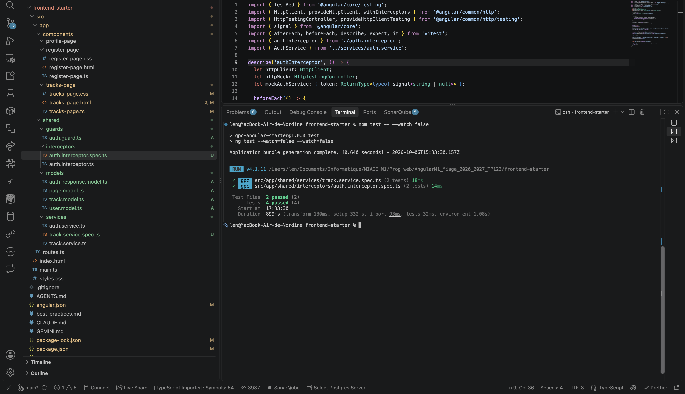
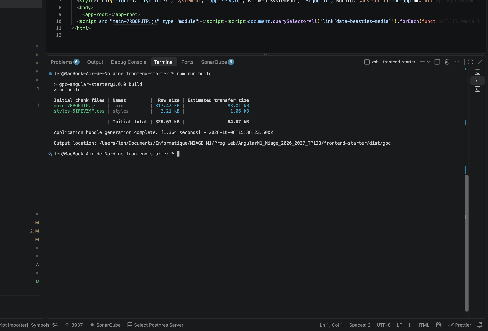
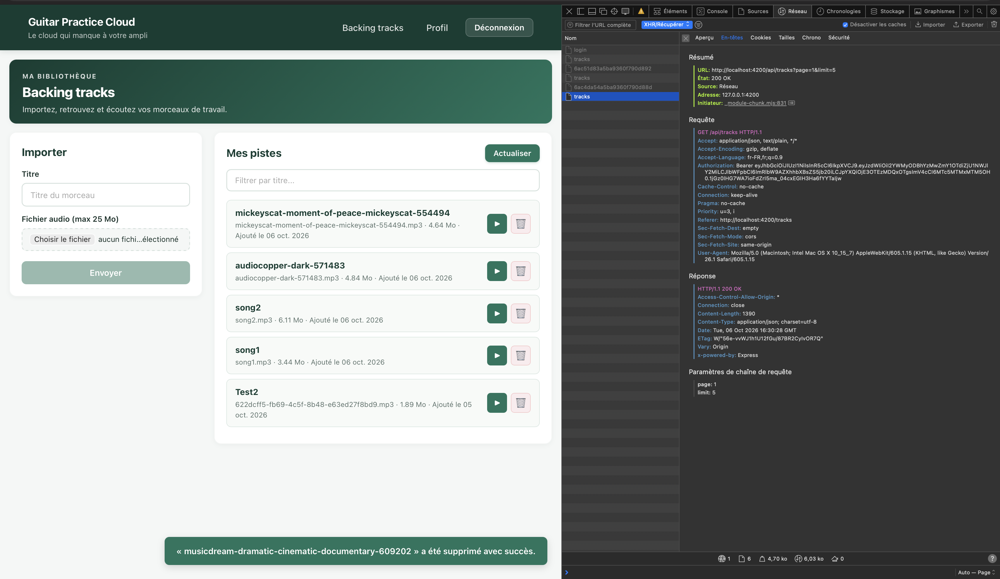
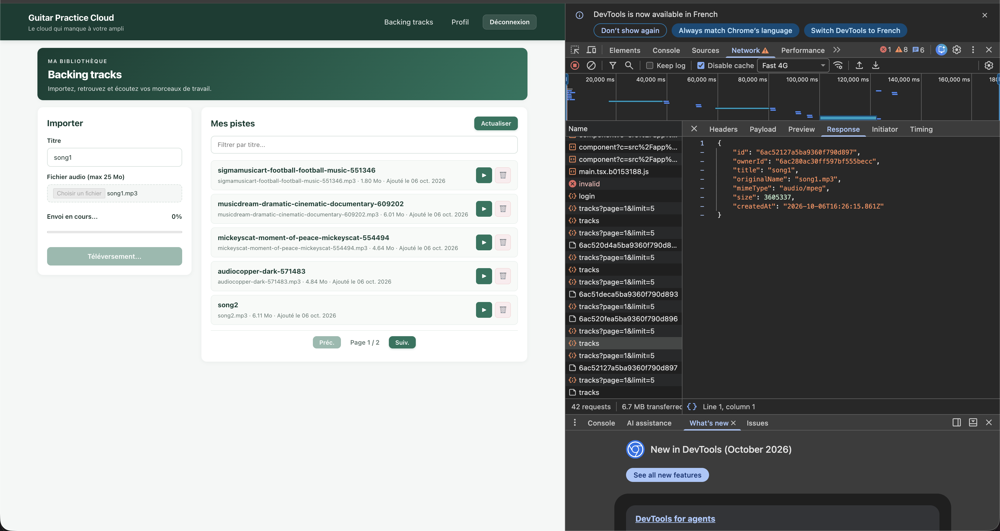

Étudiant : BRAHMIA Noureddine
Projet : Guitar Practice Cloud
Module : Programmation Web — Angular M1 MIAGE
Environnement de test : Vitest / Angular Unit Test Runner (jsdom)
RUN v4.1.11 frontend-starter
✓ gpc src/app/shared/services/track.service.spec.ts (2 tests) 20ms
✓ gpc src/app/shared/interceptors/auth.interceptor.spec.ts (2 tests) 15ms
Test Files 2 passed (2)
Tests 4 passed (4)
Duration 999ms
| Composant / Service | Cas de test vérifié | Résultat attendu | Résultat observé | Statut |
|---|---|---|---|---|
TrackService |
Transmission des paramètres de pagination (page &
limit)
|
Émission d'une requête
GET /api/tracks?page=2&limit=5 avec les bons query
params et désérialisation de l'objet paginé
Page<Track>.
|
Requête interceptée avec l'URL et les paramètres exacts via
HttpTestingController. Réponse simulée injectée avec
succès.
|
Succès |
TrackService |
Suppression ciblée d'une piste (delete()) |
Appel de la méthode HTTP DELETE /api/tracks/:id sans
corps de requête et complétion sur statut
204 No Content.
|
Requête interceptée avec le verbe DELETE et
l'identifiant ciblé. Aucun corps transmis, flux complété sans
erreur.
|
Succès |
authInterceptor |
Injection du token JWT lors d'une session active |
Clonage de la requête sortante et injection de l'en-tête HTTP
Authorization: Bearer <token> quand le signal
contient une clé.
|
En-tête Authorization présent et correctement valorisé
avec le préfixe Bearer.
|
Succès |
authInterceptor |
Omission de l'en-tête d'authentification hors session |
Transmission de la requête sans modification du header
d'autorisation lorsque le signal token() vaut
null.
|
En-tête Authorization absent de la requête interceptée.
|
Succès |



